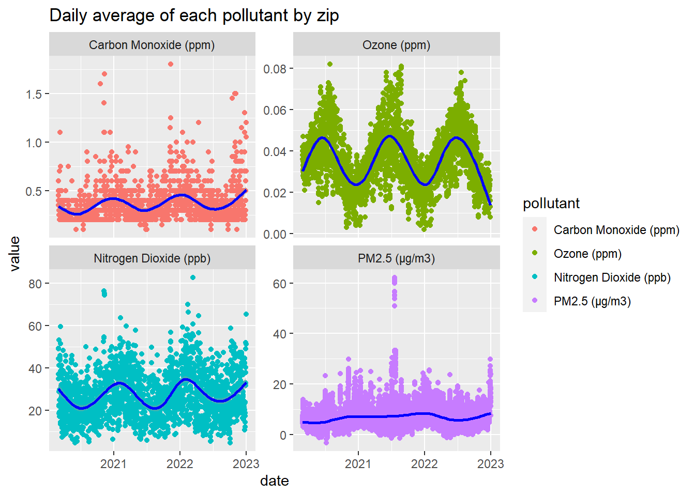

Data Processing
Merging joined_respiratory.csv and
air_quality_disease.csv
# Load dataset with respiratory and asthma counts (missing some zipcodes)
dis_asth_df = read_csv("data/cleaned_data/joined_respiratory.csv") |>
filter(zip != 88888 & zip != "Citwide" & age_group == "All age groups") |>
mutate(date = as.Date(format(as.Date(date, "%m/%d/%y"))),
year = as.numeric(format(date, format = "%Y")),
month = month.name[as.numeric(format(date, format = "%m"))],
day = as.numeric(format(date, format = "%d")),
zip = as.numeric(zip)) |>
select(year, month, day, zip, count_resp, count_asth)
# Load dataset with pneumonia data
dis_pneu_df = read_csv("data/raw_data/disease_hospital_admin.csv") |>
separate(date, into=c("month", "day", "year")) |>
mutate(day = as.numeric(day),
month = month.name[as.numeric(month)],
year = as.numeric(year)) |>
rename(zip = mod_zcta) |>
select(year, month, day, zip, total_ed_visits, ili_pne_visits, ili_pne_admissions)
# Merge two disease datasets
all_dis_df =
full_join(dis_asth_df, dis_pneu_df, by = c("month", "day", "year", "zip"))
# Now merge disease with air quality dataset
air_qual_df = read_csv("data/cleaned_data/alt_air_data.csv") |>
separate(date, into=c("month", "day", "year")) |>
mutate(day = as.numeric(day),
month = month.name[as.numeric(month)],
year = as.numeric(year)) |>
filter(!(year == '2020' & month == 'January'),
!(year == '2020' & month == 'February'),
!(aqs_parameter_desc == "Acceptable PM2.5 AQI & Speciation Mass")) |>
rename(zip = zip_code) |>
select(year, month, day, zip, daily_aqi_value, pollutant, value) |>
group_by(day, month, year, zip, pollutant) |>
summarize(value = mean(value))
# air_qual_df_aqi = read_csv("data/cleaned_data/alt_air_data.csv") |>
# separate(date, into=c("month", "day", "year")) |>
# mutate(day = as.numeric(day),
# month = month.name[as.numeric(month)],
# year = as.numeric(year)) |>
# filter(!(year == '2020' & month == 'January'),
# !(year == '2020' & month == 'February'),
# !(aqs_parameter_desc == "Acceptable PM2.5 AQI & Speciation Mass")) |>
# rename(zip = zip_code) |>
# select(year, month, day, zip, daily_aqi_value, pollutant, value) |>
# group_by(day, month, year, zip, pollutant) |>
# summarize(daily_aqi = mean(daily_aqi_value))
### note: removed acceptable pm2.5... from https://www.epa.gov/aqs/aqs-memos-technical-note-reporting-pm25-continuous-monitoring-and-speciation-data-air-quality
# Finally merge disease and air qual data together
air_qual_dis = # with value
full_join(all_dis_df, air_qual_df, by = c("month", "day", "year", "zip")) |>
mutate(
numeric_month = match(month, month.name),
date = as.Date(paste(year, numeric_month, day, sep = "-"), format = "%Y-%m-%d")
) |>
select(year, month, day, date, zip, count_resp, count_asth, total_ed_visits,
ili_pne_visits, ili_pne_admissions, pollutant, value) |>
pivot_wider(names_from = pollutant,
values_from = value) |>
select(-`NA`) |>
rename(pm25_ug_m3_lc = PM2.5,
co_ppm = CO,
o3_ppm = Ozone,
no2_ppb = NO2) |>
filter(!(year == '2022' & month == 'December'))
# air_qual_dis_aqi = # with daily aqi value
# full_join(all_dis_df, air_qual_df_aqi, by = c("month", "day", "year", "zip")) |>
# select(year, month, day, zip, count_resp, count_asth, total_ed_visits,
# ili_pne_visits, ili_pne_admissions, pollutant, daily_aqi) |>
# pivot_wider(names_from = pollutant,
# values_from = daily_aqi) |>
# select(-`NA`) |>
# rename(pm25_ug_m3_lc = PM2.5,
# co_ppm = CO,
# o3_ppm = Ozone,
# no2_ppb = NO2) |>
# filter(!(year == '2022' & month == 'December')) |>
# mutate(
# numeric_month = match(month, month.name),
# date = as.Date(paste(year, numeric_month, day, sep = "-"), format = "%Y-%m-%d")
# )
# measurement: ozone (daily_max_8_hour_ozone_concentration)
# co (daily_max_8_hour_co_concentration)
# pm2.5 (daily_mean_pm2_5_concentration)
# no2 (daily_max_1_hour_no2_concentration)Compare two air quality datasets (daily vs. seasonal/annual)
airqual_annual = read_csv("data/cleaned_data/uhf_airquality.csv") |>
filter(str_detect(name, "Fine") | str_detect(name, "NO2") | str_detect(name, "O3"))
airqual_annual = read_csv("data/cleaned_data/uhf_airquality.csv") |>
filter(str_detect(name, "Fine"))
table(airqual_annual$time_period)
#### Prepare dataset from daily data (Summer: 1June-31Aug, Winter 1Dec-28Feb)
# Annual averages for each pollutant and each zip
airqual_yr_avg = air_qual_df |>
group_by(year, zip, pollutant) |>
summarize(mean = mean(value)) |>
pivot_wider(
names_from = pollutant,
values_from = mean
)
# Seasonal averages for each pollutant and each zip
airqual_szn_avg = air_qual_df |>
mutate(season = case_when(
month %in% c("June", "July", "August") ~ "summer",
month %in% c("December", "January", "February") ~ "winter",
TRUE ~ "other"
)) |>
filter(season != "other") |>
group_by(season, year, zip, pollutant) |>
summarize(mean = mean(value)) |>
pivot_wider(
names_from = pollutant,
values_from = mean
)
#### Prepare dataset from daily data
airqual_annual = read_csv("data/cleaned_data/uhf_airquality.csv") |>
filter(str_detect(name, "Fine") | str_detect(name, "NO2") | str_detect(name, "O3")) |>
select(name, )
#### Comparison between daily data and yearly/seasonal dataExploratory Data Analysis
How do disease variables change over time?
Let us first visualize how the number of emergency department visits change over time. We can see that daily ER visits seem to peak in winter months except in 2021. This could be due to COVID restrictions.
all_dis_plot_df = all_dis_df |>
mutate(
numeric_month = match(month, month.name),
date = as.Date(paste(year, numeric_month, day, sep = "-"), format = "%Y-%m-%d")
) |>
select(-day, -month, -year, -numeric_month) |>
pivot_longer(cols = c("count_resp", "count_asth", "total_ed_visits", "ili_pne_visits", "ili_pne_admissions"),
names_to = "variable",
values_to = "count")
er_plot = all_dis_plot_df |>
filter(variable == "total_ed_visits") |>
plot_ly(x = ~date, y = ~count,
type = 'scatter',
mode = 'markers',
text = ~paste("Zip: ", zip, "<br>Date:", date, "<br>Count:", count),
color = "viridis") |>
layout(title = 'Daily total ER visits by zip', plot_bgcolor = "#e5ecf6",
xaxis = list(title = "Date"),
yaxis = list(title = "Counts"))
er_plotall_dis_df |>
mutate(
numeric_month = match(month, month.name),
date = as.Date(paste(year, numeric_month, day, sep = "-"), format = "%Y-%m-%d")
) |>
ggplot(aes(x = date, y = total_ed_visits)) +
geom_point() +
labs(title = "Daily total ER visits by zip",
y = "Total ER visits") +
theme(legend.position = "none")
From the plot below, we can see that the number of emergency department visits related to pneumonia peak during winter seasons.
resp_plot = all_dis_plot_df |>
filter(variable == "count_resp") |>
plot_ly(x = ~date, y = ~count,
type = 'scatter',
mode = 'markers',
text = ~paste("Zip: ", zip, "<br>Date:", date, "<br>Count:", count),
marker = list(color = "#35B779"))
asth_plot = all_dis_plot_df |>
filter(variable == "count_asth") |>
plot_ly(x = ~date, y = ~count,
type = 'scatter',
mode = 'markers',
text = ~paste("Zip: ", zip, "<br>Date:", date, "<br>Count:", count),
marker = list(color = "#B8860B"))
pne_visit_plot = all_dis_plot_df |>
filter(variable == "ili_pne_visits") |>
plot_ly(x = ~date, y = ~count,
type = 'scatter',
mode = 'markers',
text = ~paste("Zip: ", zip, "<br>Date:", date, "<br>Count:", count),
marker = list(color = "#440154"))
pne_adm_plot = all_dis_plot_df |>
filter(variable == "ili_pne_admissions") |>
plot_ly(x = ~date, y = ~count,
type = 'scatter',
mode = 'markers',
text = ~paste("Zip: ", zip, "<br>Date:", date, "<br>Count:", count),
marker = list(color = "#31688E"))
fig = subplot(resp_plot, asth_plot, pne_visit_plot, pne_adm_plot,
nrows = 2, shareX = TRUE) |>
layout(plot_bgcolor='#e5ecf6',
title = 'Daily counts of variables by zip',
xaxis = list(title = "date"),
showlegend = FALSE)
annotations = list(
list(
x = 0.25, y = 0.9,
text = "Respiratory diseases",
xref = "paper", yref = "paper",
xanchor = "center", yanchor = "bottom",
showarrow = FALSE),
list(
x = 0.75, y = 0.9,
text = "Asthma",
xref = "paper", yref = "paper",
xanchor = "center", yanchor = "bottom",
showarrow = FALSE
),
list(
x = 0.25, y = 0.4, text = "Pneumonia (ER visits)",
xref = "paper", yref = "paper",
xanchor = "center", yanchor = "bottom",
showarrow = FALSE
),
list(
x = 0.75, y = 0.4,
text = "Pneumonia (admissions)",
xref = "paper", yref = "paper",
xanchor = "center", yanchor = "bottom",
showarrow = FALSE
))
fig = fig |> layout(annotations = annotations)
figall_dis_plot_df = all_dis_df |>
mutate(
numeric_month = match(month, month.name),
date = as.Date(paste(year, numeric_month, day, sep = "-"), format = "%Y-%m-%d")
) |>
select(-day, -month, -year, -numeric_month) |>
pivot_longer(cols = c("count_resp", "count_asth", "total_ed_visits", "ili_pne_visits", "ili_pne_admissions"),
names_to = "variable",
values_to = "count")
dis_plot = all_dis_plot_df |>
filter(variable != "total_ed_visits") |>
mutate(variable = case_when(
variable =="count_resp" ~ "Respiratory diseases",
variable =="count_asth" ~ "Asthma",
variable =="ili_pne_visits" ~ "Pneumonia (ER visits)",
variable =="ili_pne_admissions" ~ "Pneumonia (admissions)"),
across(variable, ~factor(., levels=c("Asthma","Respiratory diseases",
"Pneumonia (ER visits)",
"Pneumonia (admissions)"))))|>
ggplot(aes(x = date, y = count, color = variable)) +
geom_point() +
geom_smooth(color = "blue") +
facet_wrap(~ variable, ncol = 2, scales="free_y") +
ggtitle("Daily counts of disease variables by zip") +
scale_color_discrete()
dis_plot
How do pollutant variables change over time?
poll_plot = air_qual_df |>
mutate(
numeric_month = match(month, month.name),
date = as.Date(paste(year, numeric_month, day, sep = "-"),
format = "%Y-%m-%d"),
pollutant = case_when(
pollutant =="CO" ~ "Carbon Monoxide (ppm)",
pollutant =="PM2.5" ~ "PM2.5 (μg/m3)",
pollutant =="Ozone" ~ "Ozone (ppm)",
pollutant =="NO2" ~ "Nitrogen Dioxide (ppb)"),
across(pollutant, ~factor(., levels=c("Carbon Monoxide (ppm)",
"Ozone (ppm)",
"Nitrogen Dioxide (ppb)",
"PM2.5 (μg/m3)"))),) |>
ggplot(aes(x = date, y = value, color = pollutant)) +
geom_point() +
geom_smooth(color = "blue") +
facet_wrap(~ pollutant, ncol = 2, scales="free_y") +
ggtitle("Daily average of each pollutant by zip") +
scale_color_discrete()
poll_plot
Cross correlation analysis
ccf_df = air_qual_dis |>
filter(!is.na(o3_ppm) & !is.na(ili_pne_visits)) |>
mutate(date_lag = date + days(117),
scaled_o3 = o3_ppm * 100,
lagged_o3 = lag(scaled_o3, n = 117)
)
print(ccf(ccf_df$o3_ppm, ccf_df$ili_pne_admissions, lag.max=250))
##
## Autocorrelations of series 'X', by lag
##
## -250 -249 -248 -247 -246 -245 -244 -243 -242 -241 -240
## -0.014 0.014 0.014 0.023 0.023 0.019 0.020 0.018 0.014 0.025 0.023
## -239 -238 -237 -236 -235 -234 -233 -232 -231 -230 -229
## 0.040 0.037 0.043 0.018 0.026 0.031 0.039 0.049 0.032 0.043 0.055
## -228 -227 -226 -225 -224 -223 -222 -221 -220 -219 -218
## 0.047 0.046 0.035 0.046 0.056 0.051 0.067 0.063 0.060 0.063 0.077
## -217 -216 -215 -214 -213 -212 -211 -210 -209 -208 -207
## 0.087 0.081 0.076 0.077 0.078 0.071 0.085 0.095 0.109 0.096 0.108
## -206 -205 -204 -203 -202 -201 -200 -199 -198 -197 -196
## 0.110 0.112 0.111 0.107 0.095 0.090 0.097 0.084 0.105 0.102 0.100
## -195 -194 -193 -192 -191 -190 -189 -188 -187 -186 -185
## 0.115 0.124 0.122 0.121 0.117 0.125 0.131 0.134 0.147 0.131 0.142
## -184 -183 -182 -181 -180 -179 -178 -177 -176 -175 -174
## 0.127 0.127 0.124 0.139 0.148 0.132 0.140 0.141 0.145 0.147 0.145
## -173 -172 -171 -170 -169 -168 -167 -166 -165 -164 -163
## 0.156 0.158 0.159 0.162 0.153 0.143 0.155 0.155 0.159 0.155 0.160
## -162 -161 -160 -159 -158 -157 -156 -155 -154 -153 -152
## 0.159 0.163 0.159 0.157 0.157 0.167 0.166 0.163 0.166 0.152 0.145
## -151 -150 -149 -148 -147 -146 -145 -144 -143 -142 -141
## 0.147 0.150 0.156 0.162 0.158 0.159 0.148 0.152 0.141 0.138 0.147
## -140 -139 -138 -137 -136 -135 -134 -133 -132 -131 -130
## 0.136 0.136 0.148 0.150 0.141 0.147 0.132 0.116 0.118 0.118 0.109
## -129 -128 -127 -126 -125 -124 -123 -122 -121 -120 -119
## 0.105 0.103 0.097 0.107 0.106 0.086 0.079 0.075 0.082 0.070 0.066
## -118 -117 -116 -115 -114 -113 -112 -111 -110 -109 -108
## 0.065 0.068 0.072 0.059 0.056 0.052 0.040 0.045 0.029 0.024 0.026
## -107 -106 -105 -104 -103 -102 -101 -100 -99 -98 -97
## 0.037 0.047 0.028 0.012 0.009 0.005 0.004 -0.005 -0.012 0.006 -0.015
## -96 -95 -94 -93 -92 -91 -90 -89 -88 -87 -86
## -0.032 -0.026 -0.040 -0.036 -0.041 -0.040 -0.045 -0.045 -0.051 -0.052 -0.049
## -85 -84 -83 -82 -81 -80 -79 -78 -77 -76 -75
## -0.061 -0.069 -0.079 -0.056 -0.068 -0.076 -0.081 -0.081 -0.077 -0.077 -0.080
## -74 -73 -72 -71 -70 -69 -68 -67 -66 -65 -64
## -0.085 -0.084 -0.093 -0.091 -0.082 -0.108 -0.104 -0.105 -0.117 -0.113 -0.112
## -63 -62 -61 -60 -59 -58 -57 -56 -55 -54 -53
## -0.129 -0.130 -0.124 -0.107 -0.096 -0.123 -0.141 -0.141 -0.126 -0.125 -0.134
## -52 -51 -50 -49 -48 -47 -46 -45 -44 -43 -42
## -0.127 -0.133 -0.120 -0.123 -0.129 -0.132 -0.136 -0.138 -0.131 -0.142 -0.138
## -41 -40 -39 -38 -37 -36 -35 -34 -33 -32 -31
## -0.127 -0.123 -0.125 -0.146 -0.138 -0.133 -0.125 -0.132 -0.133 -0.136 -0.125
## -30 -29 -28 -27 -26 -25 -24 -23 -22 -21 -20
## -0.110 -0.106 -0.103 -0.105 -0.123 -0.104 -0.092 -0.086 -0.096 -0.087 -0.087
## -19 -18 -17 -16 -15 -14 -13 -12 -11 -10 -9
## -0.096 -0.097 -0.097 -0.070 -0.087 -0.095 -0.087 -0.076 -0.069 -0.081 -0.086
## -8 -7 -6 -5 -4 -3 -2 -1 0 1 2
## -0.074 -0.060 -0.059 -0.054 -0.056 -0.050 -0.046 -0.047 -0.052 -0.037 -0.029
## 3 4 5 6 7 8 9 10 11 12 13
## -0.032 -0.049 -0.040 -0.032 -0.027 -0.020 -0.022 -0.031 -0.020 -0.015 -0.002
## 14 15 16 17 18 19 20 21 22 23 24
## 0.007 0.002 0.009 -0.016 -0.002 0.003 0.011 -0.013 -0.010 -0.009 -0.003
## 25 26 27 28 29 30 31 32 33 34 35
## 0.007 0.019 0.012 -0.006 0.012 0.032 0.024 0.027 0.012 0.008 0.010
## 36 37 38 39 40 41 42 43 44 45 46
## 0.021 0.038 0.030 0.026 0.017 0.023 0.019 0.020 0.030 0.031 0.024
## 47 48 49 50 51 52 53 54 55 56 57
## 0.025 0.015 0.025 0.033 0.033 0.034 0.046 0.029 0.025 0.033 0.039
## 58 59 60 61 62 63 64 65 66 67 68
## 0.040 0.055 0.041 0.034 0.039 0.055 0.055 0.047 0.063 0.076 0.067
## 69 70 71 72 73 74 75 76 77 78 79
## 0.090 0.079 0.077 0.093 0.107 0.099 0.114 0.099 0.092 0.100 0.106
## 80 81 82 83 84 85 86 87 88 89 90
## 0.099 0.089 0.083 0.089 0.096 0.093 0.095 0.112 0.116 0.111 0.117
## 91 92 93 94 95 96 97 98 99 100 101
## 0.135 0.147 0.124 0.137 0.117 0.118 0.119 0.141 0.143 0.130 0.127
## 102 103 104 105 106 107 108 109 110 111 112
## 0.147 0.147 0.136 0.147 0.167 0.169 0.157 0.163 0.185 0.195 0.177
## 113 114 115 116 117 118 119 120 121 122 123
## 0.178 0.176 0.187 0.182 0.205 0.185 0.170 0.176 0.169 0.174 0.172
## 124 125 126 127 128 129 130 131 132 133 134
## 0.186 0.179 0.158 0.141 0.149 0.144 0.159 0.137 0.122 0.123 0.120
## 135 136 137 138 139 140 141 142 143 144 145
## 0.128 0.120 0.117 0.108 0.112 0.108 0.113 0.097 0.094 0.085 0.073
## 146 147 148 149 150 151 152 153 154 155 156
## 0.087 0.096 0.099 0.084 0.075 0.070 0.057 0.064 0.065 0.055 0.063
## 157 158 159 160 161 162 163 164 165 166 167
## 0.061 0.059 0.056 0.052 0.050 0.042 0.042 0.035 0.034 0.039 0.039
## 168 169 170 171 172 173 174 175 176 177 178
## 0.037 0.038 0.037 0.042 0.032 0.044 0.032 0.051 0.033 0.030 0.024
## 179 180 181 182 183 184 185 186 187 188 189
## 0.022 0.037 0.023 0.019 0.034 0.023 0.018 0.014 0.007 0.000 0.007
## 190 191 192 193 194 195 196 197 198 199 200
## 0.007 0.006 -0.006 -0.008 -0.007 -0.007 -0.011 -0.027 -0.038 -0.032 -0.041
## 201 202 203 204 205 206 207 208 209 210 211
## -0.041 -0.045 -0.035 -0.038 -0.047 -0.054 -0.060 -0.054 -0.066 -0.061 -0.048
## 212 213 214 215 216 217 218 219 220 221 222
## -0.039 -0.044 -0.040 -0.027 -0.052 -0.045 -0.057 -0.036 -0.039 -0.031 -0.055
## 223 224 225 226 227 228 229 230 231 232 233
## -0.057 -0.052 -0.050 -0.052 -0.062 -0.060 -0.062 -0.067 -0.074 -0.063 -0.061
## 234 235 236 237 238 239 240 241 242 243 244
## -0.066 -0.079 -0.075 -0.077 -0.082 -0.092 -0.099 -0.089 -0.083 -0.106 -0.107
## 245 246 247 248 249 250
## -0.100 -0.101 -0.112 -0.112 -0.109 -0.110# Visualize lag
ccf_df |>
ggplot() +
geom_point(aes(x = date_lag, y = scaled_o3), color = "#440154") +
geom_point(aes(x = date, y = ili_pne_visits), color = "#D8B26A") +
labs(title = "Lagging Ozone variable by 117 days",
x = "Date",
y = "Scaled O3") +
geom_vline(xintercept = as.numeric(as.Date(c("2021-01-01", "2022-01-01", "2023-01-01"))), color = "grey")
prelag_model = lm(ili_pne_visits ~ scaled_o3, data = ccf_df)
summary(prelag_model)##
## Call:
## lm(formula = ili_pne_visits ~ scaled_o3, data = ccf_df)
##
## Residuals:
## Min 1Q Median 3Q Max
## -5.5475 -2.5946 -0.9882 1.5118 26.7952
##
## Coefficients:
## Estimate Std. Error t value Pr(>|t|)
## (Intercept) 5.8074 0.2011 28.877 <2e-16 ***
## scaled_o3 -0.4331 0.0518 -8.362 <2e-16 ***
## ---
## Signif. codes: 0 '***' 0.001 '**' 0.01 '*' 0.05 '.' 0.1 ' ' 1
##
## Residual standard error: 3.953 on 3649 degrees of freedom
## Multiple R-squared: 0.0188, Adjusted R-squared: 0.01853
## F-statistic: 69.92 on 1 and 3649 DF, p-value: < 2.2e-16ggplot(aes(x = scaled_o3,
y = ili_pne_visits),
data = ccf_df) +
geom_point(color = "#FFA500") +
geom_smooth(method = "lm", color = "blue") +
labs(title = "Pre-lag: Pneumonia hospital visits vs. Ozone (scaled)",
x = "Scaled ozone",
y = "Pneumonia hospital visits")
lag_model = lm(ili_pne_visits ~ lagged_o3, data = ccf_df)
summary(lag_model)##
## Call:
## lm(formula = ili_pne_visits ~ lagged_o3, data = ccf_df)
##
## Residuals:
## Min 1Q Median 3Q Max
## -5.7857 -2.5217 -0.8897 1.6270 26.9616
##
## Coefficients:
## Estimate Std. Error t value Pr(>|t|)
## (Intercept) 2.73729 0.19172 14.278 <2e-16 ***
## lagged_o3 0.37175 0.04931 7.539 6e-14 ***
## ---
## Signif. codes: 0 '***' 0.001 '**' 0.01 '*' 0.05 '.' 0.1 ' ' 1
##
## Residual standard error: 3.711 on 3532 degrees of freedom
## (117 observations deleted due to missingness)
## Multiple R-squared: 0.01584, Adjusted R-squared: 0.01556
## F-statistic: 56.83 on 1 and 3532 DF, p-value: 5.998e-14ggplot(aes(x = lagged_o3, y = ili_pne_visits), data = ccf_df) +
geom_point() +
geom_smooth(method = "lm")
- talk about lag? observe seasonal changes
# EDA
## Histograms
ggplot(aes(x = date), data = air_qual_dis) +
geom_point(aes(y = co_ppm, color = "CO"), size = 1) +
geom_point(aes(y = o3_ppm, color = "O3"), size = 1) +
labs(x = "Date", y = "Pollutant Level", color = "Pollutant") +
scale_color_manual(values = c("PM2.5" = "blue", "CO" = "green", "O3" = "red", "NO2" = "purple")) +
theme_minimal()
ggplot(aes(x = date), data = air_qual_dis) +
#geom_point(aes(y = pm25_ug_m3_lc, color = "PM2.5"), size = 1) +
#geom_point(aes(y = co_ppm, color = "CO"), size = 1) +
geom_point(aes(y = o3_ppm, color = "O3"), size = 1) +
#geom_point(aes(y = no2_ppb, color = "NO2"), size = 1) +
labs(x = "Date", y = "Pollutant Level", color = "Pollutant") +
scale_color_manual(values = c("PM2.5" = "blue", "CO" = "green", "O3" = "red", "NO2" = "purple")) +
theme_minimal()
ggplot(aes(x = pm25_ug_m3_lc), data = air_qual_dis) + geom_histogram()
ggplot(aes(x = co_ppm), data = air_qual_dis) + geom_histogram()
ggplot(aes(x = o3_ppm), data = air_qual_dis) + geom_histogram()
ggplot(aes(x = no2_ppb), data = air_qual_dis) + geom_histogram()
ggplot(aes(x = sqrt(total_ed_visits)), data = air_qual_dis) + geom_histogram()
ggplot(aes(x = ili_pne_visits), data = air_qual_dis) + geom_histogram()
ggplot(aes(x = ili_pne_admissions), data = air_qual_dis) + geom_histogram()
MASS::boxcox(lm(total_ed_visits ~ 1, data = air_qual_dis))
model1 = lm(count_resp ~ pm25_ug_m3_lc+co_ppm+o3_ppm+no2_ppb, data = air_qual_dis_aqi)
summary(model1)
model2 = lm(count_asth ~ pm25_ug_m3_lc+co_ppm+o3_ppm+no2_ppb, data = air_qual_dis_aqi)
summary(model2)
model3 = lm(total_ed_visits ~ pm25_ug_m3_lc+co_ppm+o3_ppm+no2_ppb, data = air_qual_dis_aqi)
summary(model3)
model4 = lm(ili_pne_visits ~ pm25_ug_m3_lc+co_ppm+o3_ppm+no2_ppb, data = air_qual_dis_aqi)
summary(model4)
model5 = lm(ili_pne_admissions ~ pm25_ug_m3_lc+co_ppm+o3_ppm+no2_ppb, data = air_qual_dis_aqi)
summary(model5)
base_model = lm(total_ed_visits ~ pm25_ug_m3_lc, data = air_qual_dis_aqi)
model = base_model |> MASS::stepAIC(direction = "both", trace = 0)
summary(model)
model1 |> ggplot(aes(x = pm25_ug_m3_lc, y = total_ed_visits)) + geom_point()# Old code
library(tidyverse)
# Load dataset with respiratory and asthma counts
dis_df = read_csv("data/cleaned_data/joined_respiratory.csv") |>
filter(zip != 88888 & zip != "Citwide" & age_group == "All age groups") |>
mutate(date = as.Date(format(as.Date(date, "%m/%d/%y"))),
year = as.numeric(format(date, format = "%Y")),
month = month.name[as.numeric(format(date, format = "%m"))],
day = as.numeric(format(date, format = "%d")),
zip = as.numeric(zip)) |>
select(-date, -age_group)
# Load cleaned air quality dataset that has been merged with disease
air_dis_df = read_csv("data/cleaned_data/air_quality_disease.csv") |>
rename(zip = zip_code) |>
mutate(day = as.numeric(day)) |>
select(year, month, day, zip, total_ed_visits, ili_pne_visits, ili_pne_admissions, everything())
# Merge two datasets
all_dis_df =
full_join(dis_df, air_dis_df, by = c("month", "day", "year", "zip")) |>
select(year, month, day, zip, total_ed_visits, ili_pne_visits, ili_pne_admissions, count_resp, count_asth, everything())
# Realized many NAs, suspect zipcode and date NAs
checkdate_perzip_airdis = airqual_annual |>
group_by(geo_place_name) |>
summarize(count = n())
checkdate_perzip_dis = dis_df |>
group_by(zip) |>
summarize(count = n())
# Found many NAs in air_quality_disease.csv - need revision
# Load cleaned air quality dataset that has been merged with disease
air_dis_df = read_csv("data/cleaned_data/air_quality_disease.csv") |>
rename(zip = zip_code) |>
mutate(day = as.numeric(day)) |>
select(year, month, day, zip, total_ed_visits, ili_pne_visits, ili_pne_admissions, everything())
# Realized many NAs, suspect zipcode and date NAs
checkdate_perzip_airdis = air_dis_df |>
group_by(zip) |>
summarize(count = n())
checkdate_perzip_dis = dis_df |>
group_by(zip) |>
summarize(count = n())
# Found many NAs in air_quality_disease.csv - need revision